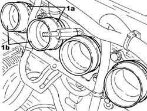

1072B54 HOSES CONNECTING AIR INTAKE CHAMBER TO INTAKE MANIFOLD(S) - R.R.
- Path
- Procedures > 10 ENGINE > 1072 INLET AND EXHAUST MANIFOLDS > 1072B INLET MANIFOLDS > 1072B54 HOSES CONNECTING AIR INTAKE CHAMBER TO INTAKE MANIFOLD(S) - R.R.
- Kind
- repair procedure (removal / refitting; the operation number is the code)
- Applies to
- engines: 1.9 JTS, 2.2 JTS; all production periods
- Interactive page
- https://sloeber94.github.io/elrnDB/alfa/159/en/#/939010592
Applies to: engines: 1.9 JTS, 2.2 JTS; all production periods
 Removing
Removing
 Refitting
Refitting- Make sure that the ignition key is in the OFF position, then disconnect the battery terminal (-).
Description | Connector | |
|---|---|---|
- | Battery |
Op. 1048A34 SLEEVE(S) FROM FLOW METER TO AIR SUPPLY CAPACITY CASE - R + R
Op. 1056F17 THROTTLE BODY WITH DVL R R
Op. 1072B50 AIR CHAMBER - R.R.
1. Loosen the bands (1a) and remove the hoses connecting the air chamber to the intake manifold (1b).

Applies to: engines: 1.9 JTS, 2.2 JTS; all production periods
Refitting
Removing- Position the hoses connecting the air chamber to the intake manifold in their housings and secure them using the bands.
Op. 1072B50 AIR CHAMBER - R.R.
Op. 1056F17 THROTTLE BODY WITH DVL R R
Op. 1048A34 SLEEVE(S) FROM FLOW METER TO AIR SUPPLY CAPACITY CASE - R + R
- Connect the negative battery terminal.
Topics linked from this page (4)
- 1048A34 SLEEVE(S) FROM FLOW METER TO AIR SUPPLY CAPACITY CASE - R + R
- 1056F17 THROTTLE BODY WITH DVL R R
- 1072B50 AIR CHAMBER - R.R.
- A001 BATTERY